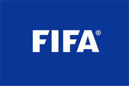

HISTORYFounded in 1904, FIFA was launched to oversee international competition among the national associations of Belgium, Denmark, France, Germany, Netherlands, Spain, Sweden, and Switzerland. FIFA now comprises 211 member nations. It is headquartered in Zurich and the current president is Gianni Infantino.
FIFA was established on May 21, 1904, by seven national associations — Belgium, Denmark, France, Netherlands, Spain, Sweden and Switzerland — to “promote the game of Association Football (as opposed to rugby or American football), to foster friendly relations among National Associations, Confederations, and their officials and players, by promoting the organization of football matches at all levels, and to control every type of association football by taking steps as shall be deemed necessary or advisable.”
FIFA's birth was a result of the growing number of international games shortly after the dawn of the 20th century. Soccer leaders in Europe felt that such expanded competition required a governing body, and under the leadership of Robert Guerin, a French journalist, the seven founding members gathered in Paris to shape the future of the sport. Guerin, FIFA's first president, presided over the organization from 1904 to 1906. Seven other men have also served as FIFA president, including Jules Rimet for 33 years from 1921 to 1954.
Currently, Italy's Gianni Infantino serves as FIFA president, having been elected in 2016's Extraordinary Congress held in the wake of corruption allegations against numerous FIFA Officials that resulted in former president Joseph “Sepp” Blatter stepping aside and then being banned from FIFA by its Ethics Committee. FIFA's general secretary since 2009, Infantino will serve a three-year term as FIFA president.
Under FIFA's governance soccer has become the world's most popular sport. According to the Federation's 2006 “Big Count,” the game is played by more than 150 million registered athletes — including 10 million women — and viewed by billions of fans in stadiums and on television worldwide. The 2014 World Cup in Brazil was broadcast in more than 200 countries. Inside the stadiums, a total of 3,429,873 spectators attended the 64 matches an average of 53,592 per match the second highest aggregate attendance behind USA 1994 (68,991).
As soccer's ultimate administrative authority, FIFA governs all facets of the game: regulating the rules of play, overseeing the transfers of players internationally, organizing international competitions such as the FIFA World Cup, establishing standards for refereeing, coaching and sports medicine, and encouraging soccer's development around the world.
Among the official world championships staged by FIFA are the World Cup, the Women's World Cup, the Under-20 World Cup, the Under-20 Women's World Cup, the Under-17 World Cup, the Under-17 Women's World Cup, the FIFA Beach Soccer World Cup and the Futsal World Cup. Additionally, FIFA oversees the men's and women's Olympic Football Tournament staged under the auspices of the International Olympic Committee every four years. FIFA has also staged the FIFA Confederations Cup, a competition between each of its confederations' champions, and the FIFA Club World Cup, which was held at the beginning of 2000 for the first time in Brazil.
|


.png)